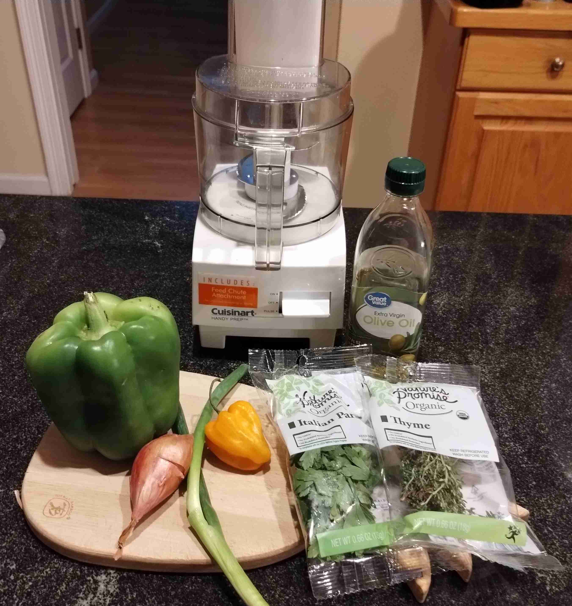

Jollof (Nigeria)
-
 5 servings
5 servings
-
 1
hours
1
hours
-
 Recipe Vibes
Recipe Vibes
-
 Meat
Meat
-
 Spicy
Spicy
-
 Salty
Salty
Cooked on July 16, 2023.
My fifteenth recipe! Jollof is a very popular dish in West Africa, and is a tomato-based rice dish. It is very similar to Spanish paella, but with a lot more spices and flavor. It is a very popular dish in Nigeria, and is often served with chicken or beef.
Rating 7/10, the spices were not too overwhelming (I probably didn’t put enough), and the rice was very flavorful. I would definitely recommend this dish to anyone who wants to try something new and different!
Special equipment: food processor, Instant Pot
Preparation
1vine-ripened tomato1green bell pepper1red onion
Blend these ingredients in a food processor until smooth. Set aside one cup.

Cooking
2cups jasmine rice (or some other long grain rice)1/3cup vegetable oil1 cupmix (from above)1red onion (diced)2 tbsptomato paste2cups chicken broth (from 2 cups chicken bouillon cubes)1 tbspcurry powder1 tbspground thyme1 tspwhite pepper1vine-repened tomato (sliced)0.5 tbspkosher salt
Set instant pot to saute mode and add vegetable oil. Add chopped onions and tomato paste. Stir and fry for 2-3 minutes.
Add in the blended mix, curry powder, thyme, white pepper, and salt. Stir and fry for 2-3 minutes.
Turn off saute mode. Wash rice until water runs clear. Add rice to the pot and stir to combine. Add sliced tomatoes on top.
Add chicken broth and stir to combine.
Set instant pot to “rice” mode. Cook until done, about 20 minutes in total.
After the instant pot depressurizes, open the lid and serve while hot!